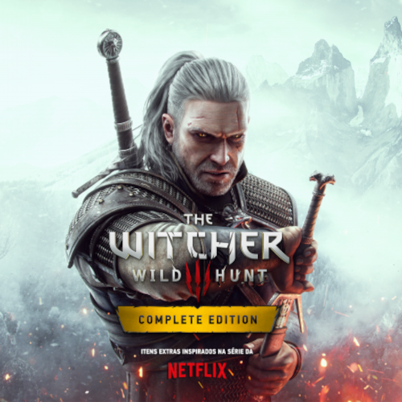
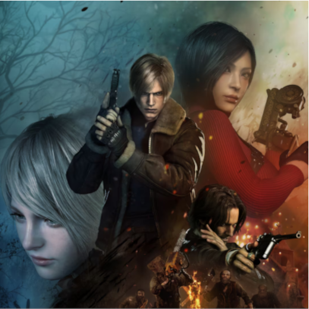
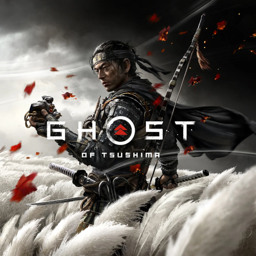
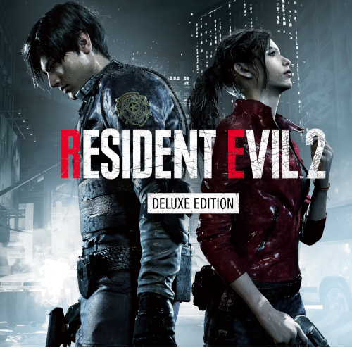
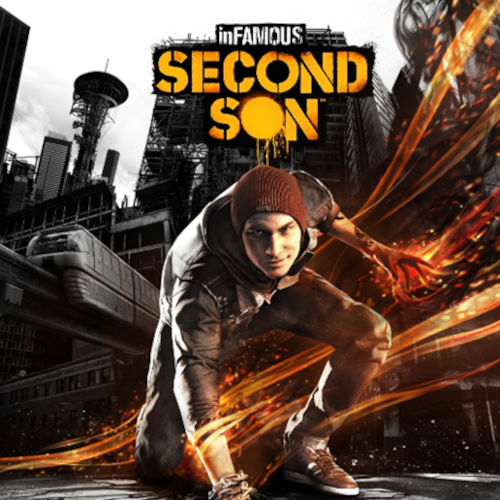
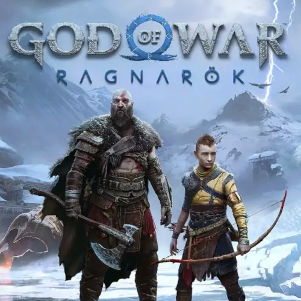
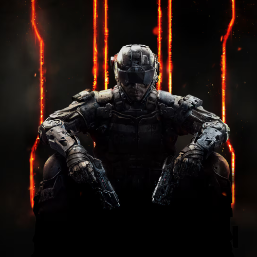
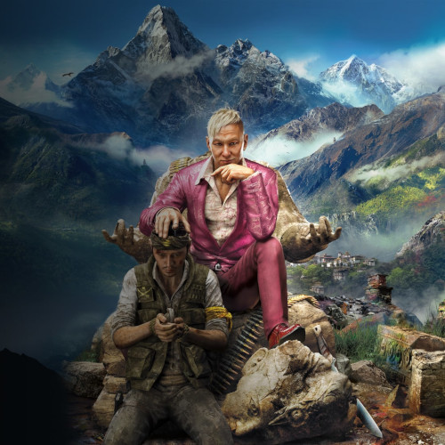
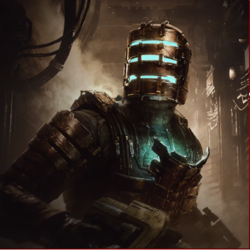
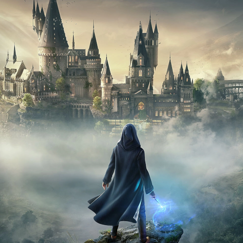

Top 12 Jogos Favoritos
1º lugar
The Witcher 3
A história de “The Witcher 3” mostra a jornada de Geralt de Rívia, o conhecido protagonista da franquia, na busca por Ciri, sua pupila desaparecida que está correndo grande perigo. Na mira da temida Caçada Selvagem, a moça guarda um poder oculto que, se cair em mãos erradas, pode acabar com tudo o que existe no mundo.
2º lugar
Resident Evil 4 Remake
Um remake de Resident Evil 4 (2005), os jogadores controlam o agente americano Leon S. Kennedy, que deve salvar Ashley Graham, filha do presidente dos Estados Unidos, do misterioso culto Los Illuminados. O remake tem um enredo atualizado, novos visuais, personagens, elenco e jogabilidade alterada.
3º lugar
Ghost of Tsushima
Ghost of Tsushima retrata a Primeira Invasão Mongol ao Japão sob liderança do personagem fictício Khotun Khan.todos os clãs de samurai da ilha de Tsushima erguem-se para defender o lar, mas são esmagados pela mão opressora dos mongóis. Somente Jin Sakai sobrevive à sangrenta batalha.
4º lugar
Resident Evil 2 Remake
é uma versão refeita de 2019 do clássico game de terror Resident Evil 2 da Capcom, lançado originalmente em 1998. O game é a sequência do primeiro jogo da franquia, sendo protagonizado pela dupla Claire Redfield e Leon S. Kennedy durante um apocalipse zumbi na cidade de Raccoon City, causado pelo T-Virus da corporação Umbrella.
5º lugar

Marvel's Spider-man
No Marvel's Spider-Man Remasterizado, encontramos um Peter Parker experiente e mais preparado para enfrentar a onda de crimes de Nova York. Em contrapartida, ele luta para conciliar o caos em sua vida pessoal e carreira enquanto o destino da Nova York da Marvel pesa sobre seus ombros.
6º lugar
Infamous Second Son
História. O jogo se passa 7 anos após o final “bom” de inFamous 2. Second Son, mostra que os condutores ainda existem e que o governo criou um grupo chamado Departamento de Proteção Unificada, para controlar e prender todos condutores (os chamam de bioterroristas).
7º lugar
God of War Ragnarök
God of War: Ragnarok, se passa três anos após o evento do jogo de 2018, com Atreus um pouco mais velho enquanto tenta entender suas origens e a importância de seu nome de batismo — Loki. A busca por respostas vai desencadear no auge do Ragnarok, o fim dos tempos Nórdicos.
8º lugar

Assassin's Creed Valhalla
O movimento do Grande Exército Pagão na Inglaterra durante as expansões Vikings. O mapa mostra alguns dos reinos que o jogador pode explorar em Valhalla. Em Assassin's Creed Valhalla, a história acontece perto do final do século IX, em 873, durante as Invasões Vikings da Grã Bretanha.
9º lugar
Call of Duty: Black Ops III
tem lugar num futuro diatópico em 2065, 40 anos depois de Black Ops II, "atirando os jogadores para um futuro negro e distorcido em que uma nova raça de soldados Black Ops emerge".A história gira à volta de uma arma química experimental alemã roubada pelos soviéticos no fim da 2ª Guerra Mundial.
10º lugar
Far Cry 4
os jogadores se encontram em Kyrat, uma região deslumbrante, perigosa e selvagem do Himalaia lutando sob o regime despótico de um rei que se autonomeou. Usando uma vasta gama de armas, veículos e animais, os jogadores vão escrever sua própria história através de uma paisagem exótica de mundo aberto.
11º lugar
Dead Space
Isaac Clarke é um engenheiro comum com a missão de consertar uma imensa nave de mineração, a USG Ishimura. Porém, logo vê que há algo terrivelmente errado. A tripulação foi massacrada e a amada parceira de Isaac, Nicole, está perdida em algum lugar da nave.
12º lugar
Hogwarts Legacy
é um jogo de ação e RPG imersivo e de mundo aberto, ambientado no primeiro mundo apresentado nos livros da série Harry Potter.Embarque em uma jornada por locais familiares e novos enquanto explora e descobre criaturas mágicas, domina feitiços